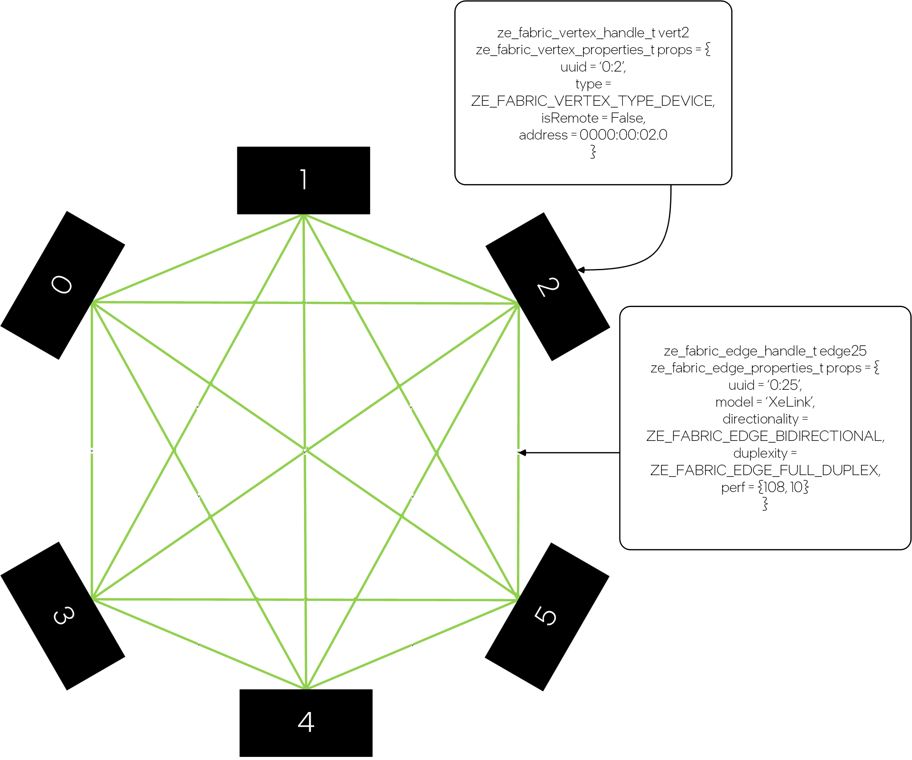
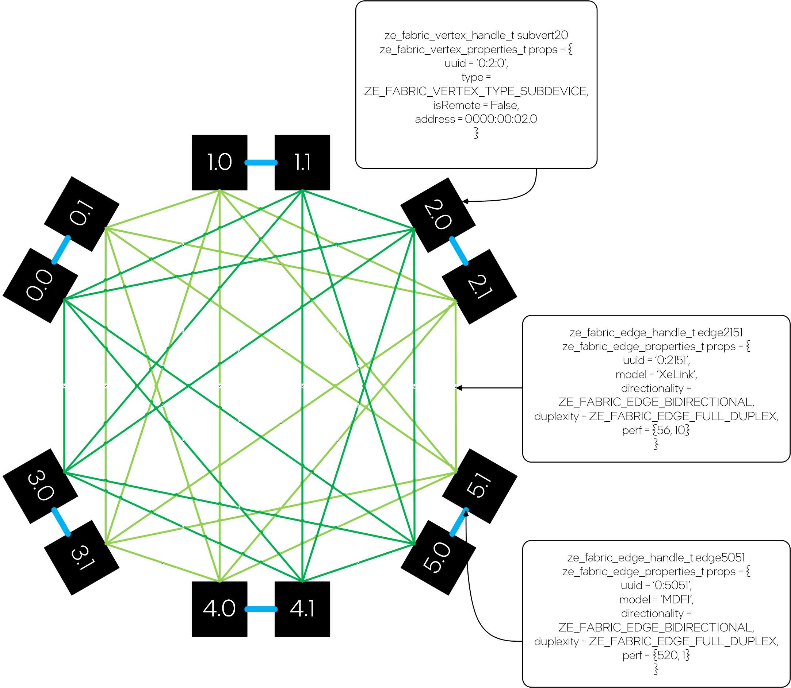
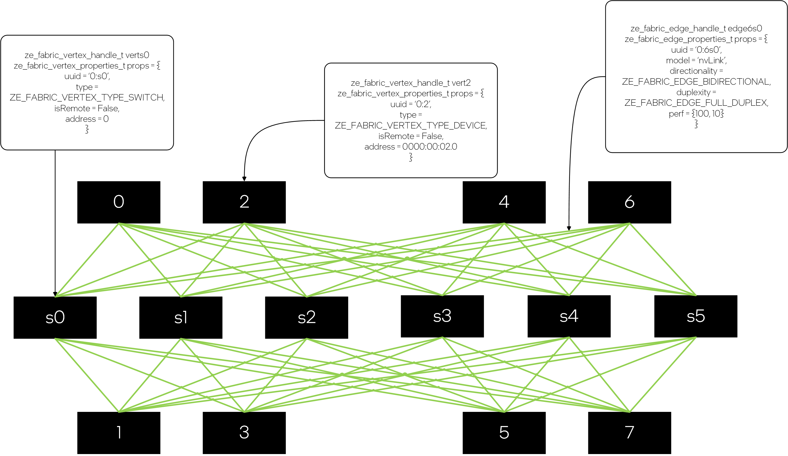

Fabric Topology Discovery Extension#
API#
Macros
ZE_MAX_FABRIC_EDGE_MODEL_EXP_SIZE
Enumerations
Structures
Functions
Fabric Topology Discovery#
The API supports two forms of topology discovery - logical & physical.
The API architecture exposes both the logical topology as well as the physical topology of the fabrics interconnecting accelerators. Accelerators are logically connected if they are able to access peer memory, even if the access passes through other accelerators. Accelerators are physically connected if there is a direct fabric connection between the two accelerators that allows the accelerators access to peer memory without passing through other accelerators in the fabrics.
Two accelerators can be checked for logical connectivity using zeDeviceCanAccessPeer. Support for remote memory access & atomic capabilities can be checked using the zeDeviceGetP2PProperties function. The ze_device_p2p_bandwidth_exp_properties_t extension struct passed to zeDeviceGetP2PProperties as the pNext member of ze_device_p2p_properties_t provides the bandwidth & latency of the connection between the two accelerators both logical as well as physical topology. This bandwidth & latency information can be used to create the logical & physical adjacency matrix representations of the fabric topology.
The API architecture also exposes the physical topology of scale-up fabrics interconnecting accelerators (exposed as devices and subdevices) and switches in the form of the adjacency graph representation of the fabric topology. Both accelerators and switches are represented as fabric vertices. The physical links that interconnect accelerators and switches are represented as fabric edges. The API supports a hierarchy of fabric vertices and fabric subvertices in keeping with the hierarchy of devices and subdevices. Devices always correspond to fabric vertices while subdevices always correspond to fabric subvertices. Both fabric vertices and fabric subvertices are represented by the same opaque handle. Fabric vertices may be remote, i.e. be associated with accelerator devices on remote nodes.
Fabric Vertices#
A fabric vertex object represents either a physical accelerator or switch in a system that supports Level-Zero.
The application may query the number of fabric vertices supported by a driver, and their respective handles, using zeFabricVertexGetExp.
The application may also obtain fabric vertex handles directly from the underlying device handles using zeDeviceGetFabricVertexExp.
Fabric vertices objects are read-only, global constructs. i.e. multiple calls to zeFabricVertexGetExp or zeDeviceGetFabricVertexExp will return identical fabric vertex handles.
Fabric vertices may expose sub-vertices that allow finer-grained querying of the topological properties of the system.
The device represented by a fabric vertex may be obtainable from the fabric vertex handle using zeFabricVertexGetDeviceExp.
Fabric vertices may represent remote accelerators or switches, i.e. accelerators or switches on a remote node, that are connected to the accelerators and switches in the local node via scale-out links. Such accelerators cannot be programmed from the local node & the corresponding device handles cannot be obtained from the fabric vertex handles representing the remote accelerator.
A fabric vertex handle is primarily used for identifying topological properties of the L0 system that can be used for optimization of the algorithm used for compute/communication.
Fabric Edges#
A fabric edge object represents one or more physical links between fabric vertices in a system that supports Level-Zero.
The application may query the number of fabric edges connected to a fabric vertex, and their respective handles, using zeFabricEdgeGetExp.
Fabric edge objects are read-only, global constructs. Multiple calls to zeFabricEdgeGetExp made with the same fabric vertices will return identical fabric edge handles.
A single fabric edge may represent multiple physical links between two fabric vertices as long as traffic is automatically spread over all links when a single engine is used to drive the transfer.
A fabric edge handle is primarily used for identifying topological properties of the L0 system that can be used for optimization of the algorithm used for compute/communication.
Discovery#
Assuming that the application is using a graph API to construct a graph, the following pseudo-code demonstrates a basic topology discovery sequence:
// Create graph object // Find all fabric vertices & the edges connecting them ze_fabric_vertex_handle_t* vertices = nullptr; uint32_t vertexCount = 0; zeFabricVertexGetExp(drivers[0], &vertexCount, nullptr); vertices = allocate(vertexCount * sizeof(ze_fabric_vertex_handle_t)); zeFabricVertexGetExp(drivers[0], &vertexCount, vertices); // Copy all vertices into graph for (u = 0; u < vertexCount; ++u) { for (v = u + 1; u < vertexCount; ++v) { uint32_t edgeCount = 0; zeFabricEdgeGetExp(vertices[u], vertices[v], &edgeCount, nullptr); ze_fabric_edge_handle_t* edges = nullptr; edges = allocate(edgeCount * sizeof(ze_fabric_edge_handle_t)); zeFabricEdgeGetExp(vertices[u], vertices[v], &edgeCount, edges); // Copy edges into graph free(edges); } } free(vertices); ...
The following diagrams illustrates examples of topologies exposed via the fabric vertex & fabric edge API.
A six device system with all-to-all connectivity between the devices.
Subvertex discovery reveals that each device in the system is actually composed of two subdevices with two planes of all-to-all connectivity (light-green & dark-green) and one plane of 2-d mesh connectivity (blue) between the subdevices.
Same as above, but with remote subdevices that manifest as subvertices but do not expose a subdevice handle.

The API also supports mixing & matching vertices & subvertices, both local as well as remote in the same set of queries.

An eight device system with six switches establishing all-to-all connectivity between the devices.
